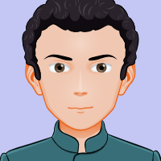

Arthur Benevides
Líder do projeto & Especialista em Estilização
"Acredito que a tecnologia pode ser uma ponte para acolher e transformar vidas."
Líder do projeto & Especialista em Estilização
"Acredito que a tecnologia pode ser uma ponte para acolher e transformar vidas."
Desenvolvedor Web & Organizador de Conteúdo
"A empatia é a interface mais importante que podemos projetar no mundo digital"
Desenvolvedor Front-end & Integração de páginas
"Garantir o direito à alimentação não é caridade, é o primeiro passo para uma sociedade mais justa."
Desenvolvedor Web & Pesquisador de Conteúdo
"A tecnologia só é verdadeiramente inteligente quando é usada para solucionar o problema mais antigo da humanidade."

Desenvolvedor Front-end
"A linha de código mais poderosa é aquela que sai da tela para se traduzir em dignidade e comida no prato de quem mais precisa."
Nós escolhemos o tema da Segurança Alimentar e Fome porque o acesso a alimentos nutritivos e suficientes é um direito humano básico, mas que ainda é negado a milhões de pessoas, situação frequentemente agravada por crises econômicas, climáticas e desigualdade social.
Nossa missão é conscientizar a população sobre os impactos do desperdício de alimentos, destacar a importância da agricultura familiar e cobrar o fortalecimento de políticas públicas para que possamos erradicar a fome e garantir comida de verdade no prato de todos.
| Indicador | 2018 | 2020 | 2022 | 2024 |
|---|---|---|---|---|
| Brasileiros em Insegurança Alimentar Grave (milhões) | 10,3 | 19,1 | 33,1 | 20,5 |
| Desperdício de alimentos no Brasil (milhões de toneladas) | 26,0 | 27,0 | 27,5 | 28,0 |
| Investimento no PAA - Aquisição de Alimentos (milhões R$) | 300 | 130 | 50 | 900 |
| Fonte: IBGE, Rede PENSSAN, CONAB, 2024 | ||||
Criação da FAO (Organização das Nações Unidas para a Alimentação e a Agricultura), com o objetivo de elevar os níveis de nutrição no mundo.
Lançamento do programa "Fome Zero" no Brasil, um marco nas políticas públicas que integrou ações estruturais e emergenciais de combate à desnutrição.
O Brasil sai do Mapa da Fome da ONU pela primeira vez na história, graças à consolidação de políticas sociais de transferência de renda e apoio à agricultura familiar.
Retrocesso histórico: o 2º Inquérito Nacional da Rede PENSSAN aponta que mais de 33 milhões de brasileiros voltaram a passar fome após sucessivas crises.